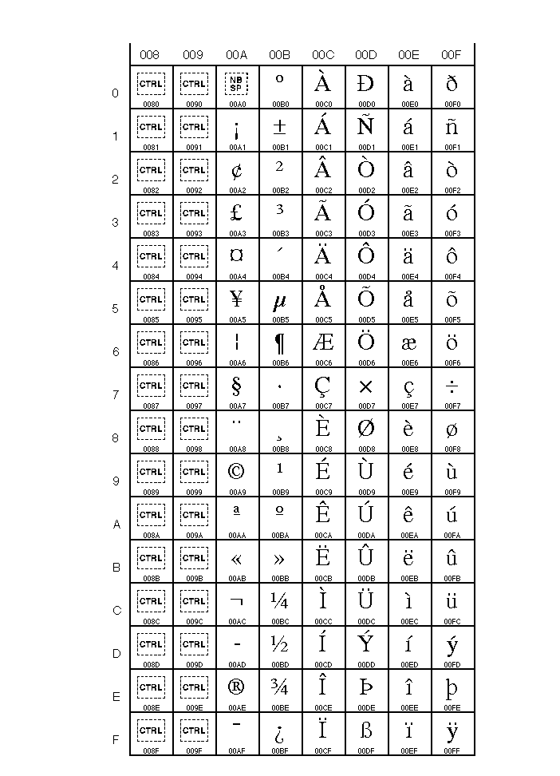
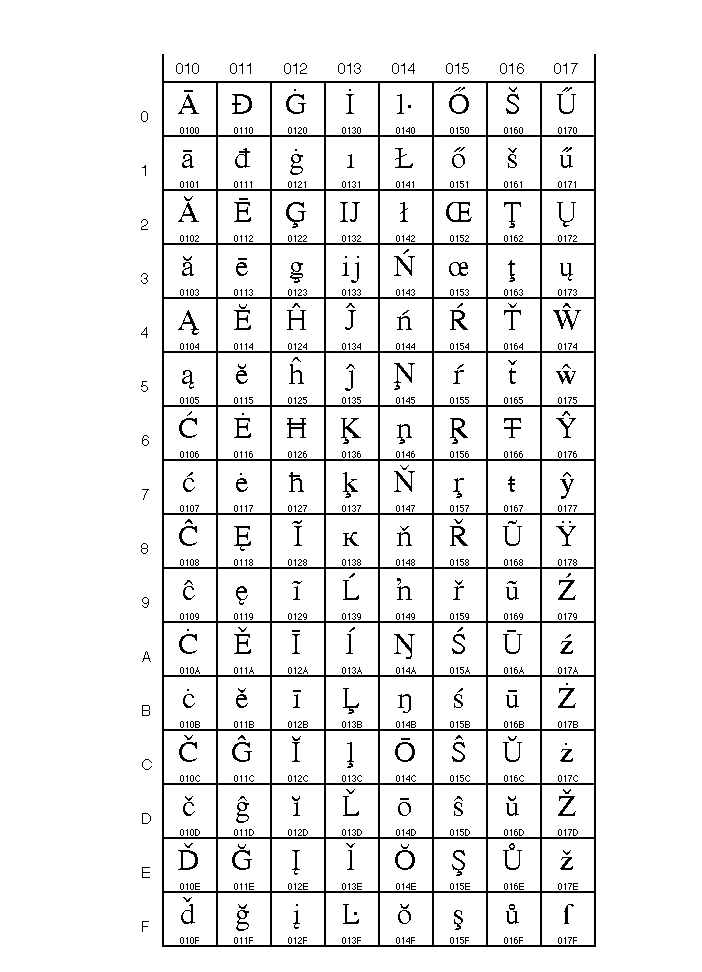

Java a èeština? Unicode! |
Svìtovı standard kódování znakù Unicode Worldwide Character Standard zavedlo Unicode Consorcium jako systém znakù urèenı pro podporu vımìny, zpracování a zobrazování psaného textu v rozliènıch jazykovıch verzích moderního svìta.
Oproti kódování ASCII a dalším jednobajtovım kódováním, ve kterıch je ka�dı znak ulo�en na 8 bitech, je v kódováních Unicode jeden znak ulo�en na jednom a více bajtech. Znaky Unicode je do bajtù mo�né kódovat vícero kódováními: kódovacími schématy Unicode Transformation Formats (UTF) nebo Universal Character Set (UCS). Mezi nejdùle�itìjší patøí UTF-8, které kóduje znaky na jeden a� ètyøi bajty a je zajímavé tím, �e je kompatibilní s ASCII, UTF-16, které znaky kóduje do dvou nebo ètyø bajtù nebo UCS-4/UTF-32, co� jsou shodná kódování pøiøazující znakùm v�dy ètyøi bajty.
Unicode je znaènì univerzální a obsahuje vlastnì znaky všech národních abeced (Ameriky, Evropa, Støední Vıchod, Afrika, Asie a Tichomoøí). Pro nás je samozøejmì dùle�ité �e i ty naše špecifické - èesko - slovenské.
Pro kódování èeštiny se pou�ívají i jiná kódování: je to pøedevším Windows-1250 (pou�ívané ve Windows), ISO-8859-2 (døíve zvané Latin2 nebo Latin 2) pou�ívané na operaèním systému Linux a další. V Javì je samozøejmì mo�né mezi jednotlivımi kódováními pøevádìt.
Pokud jste nìkdy programovali v Javì, urèitì jste narazili na problém jak nahnat do svıch aplikací, appletù a konfiguraèních souborù spoustu všelijakıch znakù se všelijak zkroucenımi znamínky v záhlaví. Tento problém samozøejmì není neøešitelnı a já se jej pokusím teï rozebrat.
V Javì jsou všechny znaky (a taky stringy) reprezentovny právì pomocí Unicode, které se zapisují pomocí escape sekvencí takto
char ch = '\unnnn';nnnn je hexadecimální vyjádøení pozice znaku v tabulce Unicode.
Za normálních okolností tento zápis zøejmì nepou�ijete, proto�e pøekladaè si ASCII znaky "konvertuje" sám, problém nastává a� s národními (èeskımi) znaky. Tady u� tento zápis pou�ít musíte.
Zápis ì (e s háèkem) pomocí escape sekvence v Unicode vypadá
char ch = '\u011B';String s = "p" + '\u011B' + "kn" + '\u011B';Novìjší verze kompilátoru Javy (urèitì od verze 1.4) umo�òují pou�ití pøepínaèe --encoding kódování, kterı umo�ní zapisovat zdrojovı kód ve zvoleném kódování, a kompilátor sám provede konverzi do Unicode. Rovnì� vıvojová prostøedí vám dovolí nastavit kódování zdrojového textu, a napøíklad Eclipse pro Windows správnì samo nastaví kódování na Windows-1250.
Pokud do Javovského programu potøebujeme naèíst soubor, kterı není kódován v Unicode, s úspìchem vyu�ijeme druhı parametr konstruktoru tøídy InputStreamReader, kde specifikujeme kódování souboru.
BufferedReader r = new BufferedReader(new InputStreamReader(new FileInputStream("soubor.txt"), "windows-1250"));V servletech je nutné nastavit vámi pou�ívané kódování nejenom pro response, ale i pro request.
request.setCharacterEncoding("UTF-8");
response.setCharacterEncoding("UTF-8");
Ve svıch JSP stránkách uvádìjte pou�ívané kódování pomocí direktivy
<%@ page language="java" contentType="text/html; charset=utf-8" pageEncoding="utf-8"%>
Tuto direktivu nezapomeòte vlo�it i do souborù, které vkládáte pomocí <%@ include file="soubor.html" %>.
Vìtšina databází (a databázovıch driverù), ke kterım se pøistupuje pøes JDBC, nemá se správnım pøekódováním znakù mezi kódováním databáze a Javou problém (PostgreSQL, Oracle,...), nicménì MySQL vy�aduje pou�ité kódování uvést v connection stringu. Pokud databáze pou�ívá kódování Windows 1250, bude to vypadat takto:
jdbc:mysql://hostname/database?characterEncoding=Cp1250Pro ISO 8859-2 pou�ijeme hodnotu ISO8859_2.
Pokud databáze pou�ívá UTF-8, je tøeba ještì pøidat parametr useUnicode=true:
jdbc:mysql://hostname/database?useUnicode=true&characterEncoding=UTF-8Obèas se hodí dikaritiku z textu odstranit (z è udìlat c).
V Javì verze 1.4 a 5 je tøída Normalizer, která je souèástí nestandardního balíèku sun.text:
String bez = Normalizer.normalize("�lu�ouèkı", Normalizer.DECOMP, 0).replaceAll("[^\\p{ASCII}]","");
V Javì od verze 6 pak je pak pøesunuta java.text.Normalizer a má trochu jinou syntaxi:
String bez = Normalizer.normalize("�lu�ouèkı", Form.NFD).replaceAll("[^\\p{ASCII}]","");
Mù�eme také pou�ít ICU (International Components for Unicode). (Kompletní ICU4J má pøes 3MB, ale samotnı jar s transliterátorem má cca 700kB, viz How to modularize ICU4J.)
Transliterator t = Transliterator.getInstance("NFD; [:Nonspacing Mark:] Remove; NFC");
String bez = t.transliterate("�lu�ouèkı");
| Znak | hexa hodnota | Znak | hexa hodnota | Znak | hexa hodnota | ||
|---|---|---|---|---|---|---|---|
| Á | 00C1 | Í | 00CD | � | 0164 | ||
| á | 00E1 | í | 00ED | � | 0165 | ||
| È | 010C | Ò | 0147 | Ú | 00DA | ||
| è | 010D | ò | 0148 | ú | 00FA | ||
| Ï | 010E | Ó | 00D3 | Ù | 016E | ||
| ï | 010F | ó | 00F3 | ù | 016F | ||
| É | 00C9 | Ø | 0158 | İ | 00DD | ||
| é | 00E9 | ø | 0159 | ı | 00FD | ||
| Ì | 011A | Š | 0160 | � | 017D | ||
| ì | 011B | š | 0161 | � | 017E |
A kdo mi nevìøí, tak tady jsou dvì originální Unicode tabulky se znaky, které jsou pro nás dùle�ité.


Další tabuldy znakù 0180 - 0217 a 2100 - 2138
Š�astné a veselé programování pøeje Martiner
Prameny: David Flanagan: Programování v jazyce Java a
http://www.unicode.org
Název a loga Unicode jsou nepochybnì registrovanımi znaèkami Unicode Consorcium.
Webhosting zajiš�uje Macroware s.r.o.
{kind=link}
{kind=link}